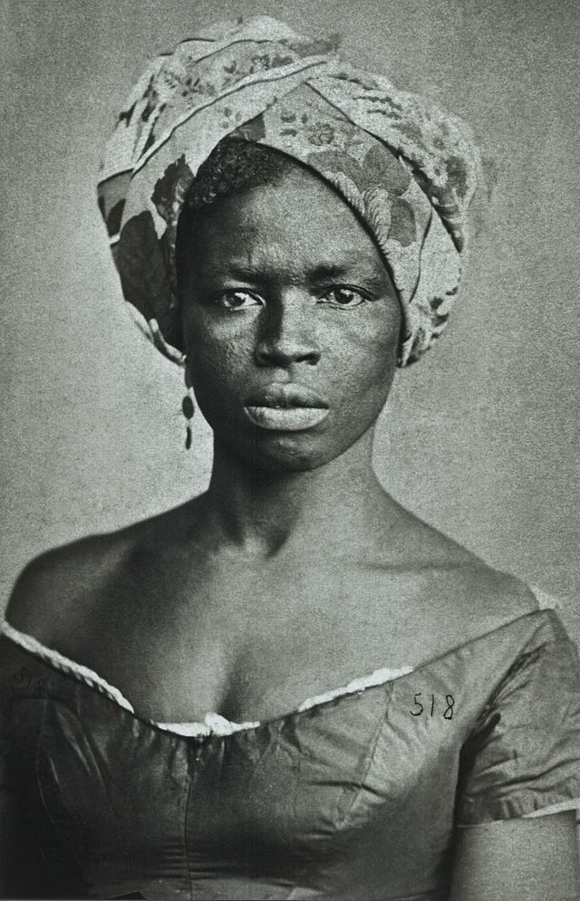
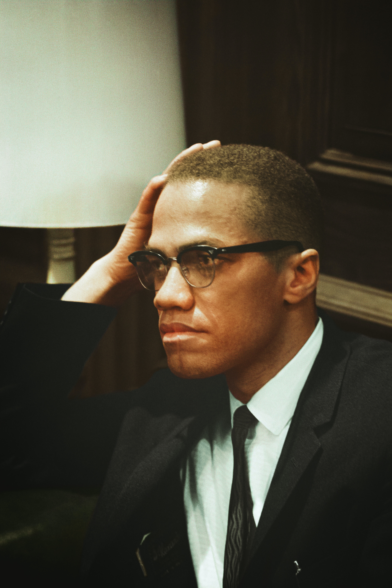
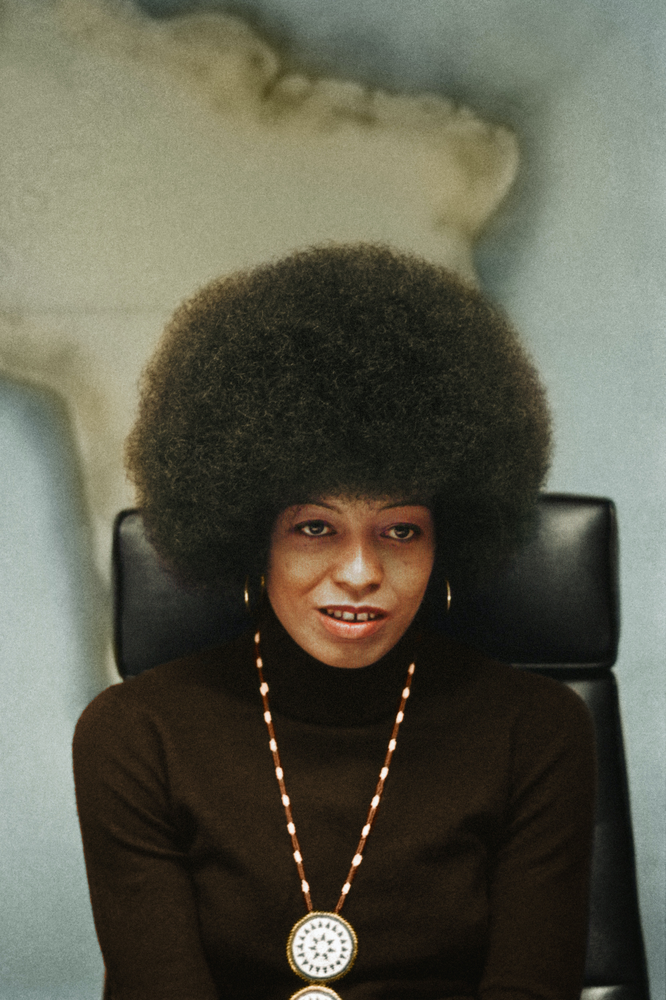
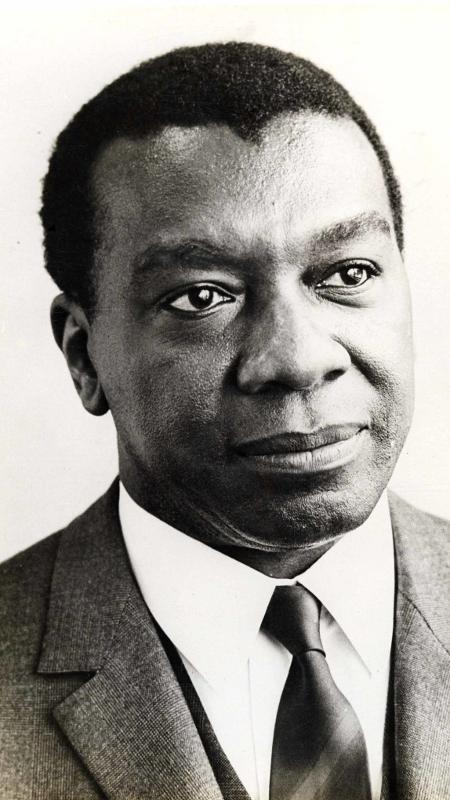
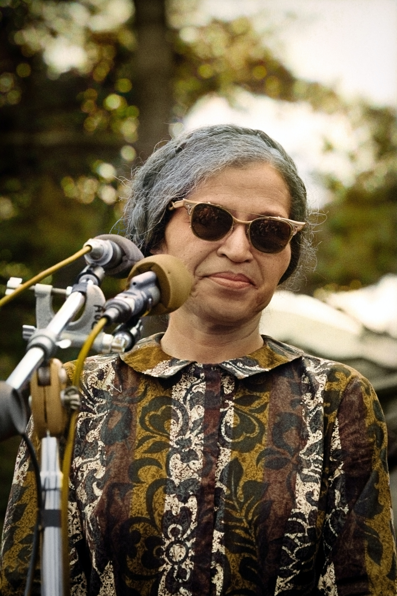

Personalidades Negras
-

- 
- 
- 
- 
- 
Martin Luther King Jr.
Martin Luther King Jr. (1929-1968) foi um ativista norte-americano, lutou contra a discriminação racial e tornou-se um dos mais importantes líderes dos movimentos pelos direitos civis dos negros nos Estados Unidos. Recebeu o Prêmio Nobel da Paz em 1964
Em 1951 formou-se em Teologia na Universidade de Boston. Convertido em pastor, em 1954, Martin Luther King assumiu a função de pastor em uma igreja na cidade de Montgomery, no Alabama.
Em 1963 sua luta alcançou um dos momentos culminantes ao liderar a Marcha sobre Washington, que reuniu 250 mil pessoas, quando fez seu importante discurso intitulado I Have a dream (em português, Eu tenho um sonho), em que descreve uma sociedade na qual negros e brancos possam viver harmoniosamente.
Sua luta persistiu, liderando a marcha de Selma a Montgomery em 1965. Tragicamente, sua vida foi interrompida por um assassinato em 1968, enquanto apoiava uma greve de lixeiros em Memphis. Seu legado perdura, com homenagens como a Medalha Presidencial da Liberdade em 1977 e a Medalha de Ouro do Congresso Americano em 2004, pelos 50 anos da Lei dos Direitos Civis.
Dandara dos Palmares
Dandara dos Palmares viveu no Brasil colonial no século XVII e se destacou como uma figura icônica na luta contra a escravidão. Ela foi uma guerreira no Quilombo dos Palmares, uma comunidade de fugitivos escravizados que resistiram ao sistema opressivo.
Dandara não apenas combateu ao lado de seu marido, Zumbi dos Palmares, mas também desempenhou um papel fundamental na liderança e estratégia do quilombo.
Sua bravura e determinação inspiraram outros a se unirem na busca pela liberdade.Ela é lembrada por suas habilidades de combate e sua dedicação à causa da emancipação.
Dandara dos Palmares se tornou um símbolo de resistência e força no movimento negro brasileiro. Seu legado perdura como um lembrete poderoso da luta histórica contra a escravidão e da busca pela igualdade e justiça para os afro-brasileiros.
Malcolm X
Malcolm X (1925-1965) foi um influente líder dos direitos civis nos Estados Unidos, conhecido por sua defesa dos direitos e da igualdade dos negros. Inicialmente associado à Nação do Islã, uma organização muçulmana negra, ele mais tarde se distanciou de suas visões radicais.
Malcolm X enfatizou a autossuficiência e a resistência à opressão. Sua retórica contundente e seu ativismo inspiraram muitos a questionar o racismo sistêmico. Ele também defendia a autodescoberta e a educação como meios de capacitar a comunidade negra.
Após sua peregrinação a Meca em 1964, Malcolm X adotou uma visão mais inclusiva do Islã e se afastou do separatismo racial. No entanto, sua vida foi tragicamente interrompida em 1965, quando foi assassinado em um evento relacionado à rivalidade entre facções da Nação do Islã.
Malcolm X deixou um legado duradouro como defensor dos direitos civis e da justiça social, e suas palavras continuam a inspirar a busca por igualdade e empoderamento entre os afro-americanos.
Angela Davis
Angela Davis (nascida em 1944) é uma renomada ativista, escritora e acadêmica dos Estados Unidos. Ela é mais conhecida por seu ativismo pelos direitos civis, igualdade racial e justiça social nas décadas de 1960 e 1970.
Davis era membro ativo do Partido Comunista dos EUA e se envolveu em questões relacionadas à prisão e ao sistema de justiça criminal. Ela ficou famosa por sua prisão e julgamento em 1970, quando foi acusada de conspiração em um tiroteio em um tribunal.
Apesar de sua prisão, Angela Davis se tornou um ícone da luta pelos direitos civis e uma voz influente na discussão sobre racismo, justiça e igualdade. Ela é autora de vários livros e continuou seu ativismo ao longo dos anos, defendendo questões como o abolicionismo penal e os direitos das mulheres.
Angela Davis é uma figura inspiradora que dedicou sua vida à luta contra a opressão e a busca por um mundo mais justo e igualitário.
Milton Santos
Milton Santos (1926-2001) foi um proeminente geógrafo brasileiro. Reconhecido internacionalmente, ele revolucionou a geografia crítica com seu trabalho inovador. Sua abordagem considerava o espaço geográfico como um reflexo das relações sociais e políticas, indo além da geografia tradicional.
Santos defendia a importância de uma geografia comprometida com a justiça social e a equidade. Ele analisou questões como urbanização, globalização e desigualdades espaciais. Sua obra mais conhecida, "Por uma outra globalização", criticou as desigualdades do sistema econômico global.
Além de suas contribuições acadêmicas, Milton Santos foi um defensor incansável dos direitos humanos e do desenvolvimento sustentável. Sua influência se estendeu além da academia, inspirando muitos a abordar questões geográficas sob uma perspectiva crítica e socialmente consciente.
O legado de Milton Santos perdura como um farol para a geografia crítica e para aqueles que buscam compreender e transformar o mundo em busca de uma sociedade mais justa e igualitária.
Rosa Parks
Rosa Parks (1913-2005) foi uma notável ativista dos direitos civis nos Estados Unidos. Em 1955, ela desafiou a segregação racial ao se recusar a ceder seu assento a um homem branco em um ônibus em Montgomery, Alabama
Sua prisão desencadeou o famoso boicote aos ônibus de Montgomery, liderado por Martin Luther King Jr.Parks era uma costureira e membro ativo da NAACP, que lutava contra a discriminação racial. Seu ato de coragem inspirou outros a se levantarem contra a injustiça racial.
O boicote aos ônibus durou 381 dias e resultou em uma decisão da Suprema Corte dos EUA que declarou a segregação nos ônibus inconstitucional.Rosa Parks é lembrada como a "Mãe do Movimento dos Direitos Civis" e seu legado continua a influenciar a luta por igualdade e justiça social.
Ela recebeu inúmeras honrarias, incluindo a Medalha de Ouro do Congresso Americano. Seu compromisso e coragem deixaram uma marca indelével na história dos direitos civis nos Estados Unidos.